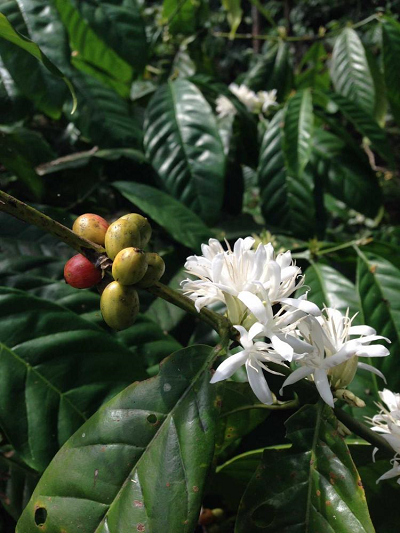
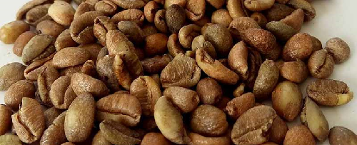

Kopi Liberika

Kopi jenis ini memiliki nama ilmiah Coffea liberica var. Liberica. Pada awalnya tanaman ini digolongkan ke dalam spesies yang sama dengan kopi robusta dengan nama ilmiah Coffea canephora var. liberica. Namun karena secara morfologi dan sifat-sifat lainnya dari kopi ini berbeda dengan robusta, jenis ini dinyatakan sebagai spesies yang berbeda dengan nama ilmiah Coffea liberica sehingga dilakukan pengelompokkan baru. Nama Liberika diambil dari nama daerah Liberia di Afrika Barat yang merupakan tempat pertama kali ditemukannya jenis kopi ini. Kopi ini mudah ditemukan tumbuh secara liar di daerah Afrika, meliputi negara Kamerun, Benin, Angola, Afrika Tengah, Sudan, Kongo, Nigeria, Pantai Gading, Guinea, Gana, Liberia, Sao Tomé, Gabon, Sierra Leone, dan Uganda. Pada tahun 1878, kopi liberika dibawa untuk pertama kalinya ke Indonesia oleh Belanda. Tanaman ini dibawa untuk menggantikan tanaman kopi arabika yang banyak mengalami kerusakan karena terserang penyakit karat daun atau Hemelia vastatrixi (HV). Namun, sekitar tahun 1907 penyakit karat daun juga menyerang hampir seluruh perkebunan kopi di dataran rendah Indonesia, termasuk perkebunan kopi liberika. Daya tahan kopi ini terhadap penyakit karat daun memang lebih baik dibanding kopi arabika, namun tidak lebih baik kopi robusta. Oleh karena itu, pemerintah Belanda kembali mengganti kopi liberika dengan kopi robusta.
Kopi liberika memang tidak populer, namun ada beberapa varietas Liberika yang cukup dikenal masyarakat, di antaranya adalah Duvrei dan Ardoniana. Pada tahun 2014, Pusat Penelitian Kopi Indonesia merilis varian baru dari jenis ini, yaitu kopi Liberika Tunggal Komposi atau juga sering disingkat dengan Libtukom. Varian kopi ini dikembangkan di Jambi. Varian ini memiliki keunggulan yaitu mempunyai daging buah yang relatif tebal sehingga dapat mengurangi risiko penyusutan bobot secara signifikan.